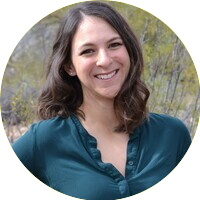
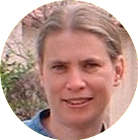
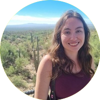

WiDS Tucson 2025
WiDS Tucson presents:
Living in the ever changing landscape of data
Except for where noted, this conference can be attended either in person or virtually via Zoom (link shared upon registration)
| Time | Event | Speaker |
| ~8:45am - 9:00am | Arrival + Welcome | Coffee + Pastries provided by University of Arizona Data Science Institute |
| 9:00am - 9:45am | Keynote | Catherine D’Ignazio |
| 10:00am - 11:00am | Invited Speakers | Ashley Huggins, Laura Falk, Salena Torres Ashton |
| 11:00am - 11:30am | Data Blitz | Ashwini Jannu, Delaney Scott-Martin, Liliana Salas, Abadit Weldeslassie, Deandra Jones, and Jiayue He |
| 11:30am - 12:30pm | Morning Panel | Meghavarshini (Megh) Krishnaswamy, Xinchen Yu, Dalal Alharthi, and Laura Dozal |
| 12:30pm - 1:00pm | Lunch | Break Lunch at ENR2 provided by University of Arizona Data Science Institute |
| 1:00pm - 2:00pm | Afternoon Panel | Andrea Thomer |
| 2:00pm - 3:00 pm | Invited Speakers | Xuan Lu, Dianne Patterson, Jung Mee Park, Desiree Andersen |
| 3:15pm - 3:30pm | Data Blitz TBD | Roxana Akbarsharifi, Mary Ahern, Sarah Bratt, Melika Sharifi, Anushree Biswas, and Danielle Van Boxel |
| 4:00pm - 6:00pm | Social |
Bring your own cash for drinks and snacks! |
*Blue text denotes in-person only sessions
Catherine D’Ignazio
Data Feminism in Action
Catherine D’Ignazio is an Associate Professor of Urban Science and Planning in the Department of Urban Studies and Planning at MIT. She is also Director of the Data + Feminism Lab which uses data and computational methods to work towards gender and racial justice. D’Ignazio is a scholar, artist/designer and hacker mama who focuses on feminist technology, data literacy and civic engagement. Her 2020 book from MIT Press, Data Feminism, co-authored with Lauren Klein, charts a course for more ethical and empowering data science practices. Since 2019, she has co-organized Data Against Feminicide, a participatory action-research-design project, with Isadora Cruxên, Silvana Fumega and Helena Suárez Val, which includes co-designed AI tools for human rights data activists. Her 2024 book, Counting Feminicide: Data Feminism in Action (MIT Press) is an extended case study about grassroots data activism to end gender-related violence. D’Ignazio’s research at the intersection of technology, design & social justice has been published in the Big Data & Society, the Journal of Community Informatics, and the proceedings of ACM SIGCHI and ACM FAccT. Her art and design projects have won awards from the Tanne Foundation, Turbulence.org and the Knight Foundation and exhibited at the Venice Biennial and the ICA Boston.
Salena Torres Ashton
What is Probability and Why Does it Matter for Data Science?
Salena Torres Ashton is a first-generation college student at the University of Arizona. She has a MS in Data Science and hopes to complete her PhD in Information Science in 2025. She researches causality and formal semantics in natural language, examining their effects on how people phrase questions. Salena currently teaches ’Introduction to Machine Learning” with the iSchool and serves as a mentor for the Women in Stem and Engineering program at the U of A. Before attending graduate school, Salena worked for over 25 years as a professional genealogist and holds a BA in History. In her free time, she enjoys solo bicycling, backpacking, and gardening.
Ashley Huggins
Mapping the brain in PTSD: leveraging global, large-scale neuroimaging datasets to identify structural and functional neural markers of posttraumatic stress disorder
Dr. Ashley Huggins is an Assistant Professor in the Department of Psychology at the University of Arizona, where she directs the Cognition, Affect, and Traumatic Stress (CATS) Lab. She earned her PhD in Clinical Psychology from the University of Wisconsin-Milwaukee. Dr. Huggins is an affective neuroscientist and clinical neuropsychologist whose research focuses on better understand brain-based mechanisms involved in the onset and development of posttraumatic stress disorder (PTSD). Her current projects are centered on how sex hormones and cognitive function affect how our brains learn and remember fear. She is also more broadly interested in how socioenvironmental factors (such as neighborhood disadvantage and exposure to community violence) shape brain health and function.
Laura Falk
API Key Basics: Unlocking Data Possibilities

Laura Falk, MS, is a Data Scientist at the University of Arizona’s Mel and Enid Zuckerman College of Public Health, with over a decade of experience in managing and analyzing longitudinal datasets. She specializes in human health surveillance and ecology, and currently works with the Arizona CoVHORT to advance understanding of COVID-19. Laura’s professional interests include predictive analytics, data visualization, and the development of consistent, reproducible workflows.
Jung Mee Park
Jung Mee Park is a Young Adult Librarian with the Pima County Public Library. Previously, she worked as an educator and data analyst at the University of Arizona. An award-winning sociologist, she was also a postdoctoral fellow in Korean Studies at the University of Southern California. She holds a PhD in Sociology from Cornell University, an MLIS from the University of Arizona, and an MA in Quantitative Methods in the Social Sciences from Columbia University. Her research has been published in the American Journal of Sociology, International Area Studies Review, and the Journal of Education in Library and Information Science. Her favorite data analysis tool is RStudio.
Dianne Patterson
Three Key Tools for the Future

Dianne Patterson is the RII staff scientist in support of neuroimaging. Dianne Patterson is also the program coordinator for the Neuroimaging Methods Certificate and an instructor of computational and neuroimaging skills, all under the umbrella of Cognitive Science. Dianne is especially passionate about good teaching and documentation, which is why the phenomenal OpenClass platform is in use for all teaching. Diane is working to develop immersive virtual training opportunities for the University of Arizona.
Xuan Lu
Understanding Emotions in Remote Work: The Link Between Emojis and Long-Term Engagement
Dr. Xuan Lu is a tenure-track assistant professor at the College of Information Science, the University of Arizona. Her research focuses on creating novel methodologies of human-centered data science and using them to understand and optimize the activities and outcomes of our future human society, especially those triggered by technology innovations, with a recent emphasis on the domain of Future of Work.
Desiree Andersen
Predictive Modeling of Mosquito Abundance and West Nile Virus Transmission Dynamics: Insights from a Decade of Surveillance in Arizona

Desiree is a postdoctoral researcher in the Combrink Lab at the University of Arizona, where her work focuses on understanding how ecological systems, climate change, and zoonotic diseases interact. Using spatial simulations, she studies the risks posed by mosquito-borne viruses in Arizona, combining her background in disease modeling with a commitment to developing practical conservation strategies.